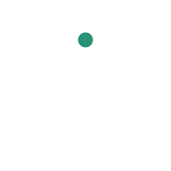

Misión
Conectamos a estudiantes con docentes, profesionales e instituciones para impulsar la investigación, la creación de nuevas startups y el desarrollo con inteligencia artificial e innovación digital.
Comunidad estudiantil · En toda Bolivia

Joint Academic Development in Artificial Intelligence
Potenciando el talento boliviano
Conectamos a estudiantes con docentes, profesionales e instituciones para impulsar la investigación, la creación de nuevas startups y el desarrollo con inteligencia artificial e innovación digital.
Hub
Redes oficiales, correo, WhatsApp y los formularios para sumarte.
Qué es
Potenciando el talento boliviano.
Somos una comunidad estudiantil de carácter académico, científico y colaborativo, apartidaria y no confesional. Unimos a estudiantes, docentes y profesionales para impulsar la investigación, la creación de nuevas startups y el desarrollo con inteligencia artificial e innovación digital.
Tenemos domicilio en Santa Cruz de la Sierra y proyección nacional en toda Bolivia. No hay sede física fija: trabajamos de forma virtual y en los espacios que facilitan universidades, sociedades científicas, instituciones aliadas y otras organizaciones. Fundada el 15 de agosto de 2026.
Conectamos a estudiantes con docentes, profesionales e instituciones para impulsar la investigación, la creación de nuevas startups y el desarrollo con inteligencia artificial e innovación digital.
Ser la comunidad académica de referencia en Bolivia, uniendo a todas las universidades en un ecosistema que forme talento, genere investigación y abra oportunidades para los jóvenes.
Estudiantes universitarios de Bolivia, docentes, profesionales, universidades, sociedades científicas, instituciones, empresas y el público en general. Cualquier universidad y cualquier nivel.
Cómo trabajamos
Qué hacemos
Cada pilar existe para que la comunidad funcione mejor. No somos una escuela, un laboratorio ni un patrocinador.
Conectamos a quienes quieren realizar proyectos de investigación con estudiantes y docentes que los ayudan a validar sus ideas.
Apoyamos como staff y coorganizadores en los eventos de otras comunidades, embajadores y organizaciones, y facilitamos los espacios que tenemos a disposición.
Organizamos eventos y compartimos los del ecosistema para acercar la innovación y la tecnología al público.
Buscamos alianzas estratégicas con universidades, empresas, comunidades, organizaciones y patrocinios que impulsen las actividades de la comunidad.
Abrimos oportunidades para que nuestros miembros sean embajadores estudiantiles y se den a conocer.
Somos una comunidad estudiantil de carácter académico, científico y colaborativo. Una red entre universidades, neutral frente a empresas y plataformas, y un aliado comunitario.
No somos un patrocinador, una empresa de eventos, la voz oficial de una universidad, un laboratorio de investigación ni una escuela. No competimos con otras comunidades.
Validación
Postulación con el título, el problema, el objetivo y el perfil de apoyo. La Coordinación General revisa y deriva al Consejo Académico. Se conecta con estudiantes y docentes mentores. Hay seguimiento y difusión, siempre con autorización de los autores.
La propiedad intelectual es de los autores. La comunidad actúa como articuladora. El resultado es una devolución escrita, no un certificado.
Límite claro
No es una certificación oficial ni un aval de una universidad.
La comunidad no certifica proyectos y no habla en nombre de ninguna casa de estudios. La revisión es una devolución de la red, nada más.
Participa
Dos convocatorias abiertas. Elige el rol y completa el formulario oficial.
Convocatoria
Quienes lideran a la comunidad en cada universidad. Postúlate con el formulario oficial.
CALL FOR MENTORS
Rol ad honorem, con dedicación flexible. Para docentes, investigadores y profesionales senior de tecnología de toda Bolivia.
Grupo
Si quieres enterarte y participar, el grupo de WhatsApp es el punto de encuentro de la comunidad.
Unirme al grupoProyectos
Si estudias en cualquier universidad y en cualquier nivel, puedes proponer un proyecto. Escríbenos: el primer paso es el correo o WhatsApp.
Escribir a la comunidadContacto
Usa el canal que te quede más cerca. El correo y el teléfono se pueden copiar.
Santa Cruz de la Sierra, con proyección en toda Bolivia.